← 返回三维展厅Dragon 与 Blue Origin · 精修模型
本轮新增三个可编辑模型，并修正 Falcon Heavy 的字样方位。以下新旧与近景图均来自真实网页。可以打开模型，用近景按钮观察，或在“构造分解”中查看部件归属。
Falcon Heavy：字样在外侧
据 NASA 发布、SpaceX 拍摄的 GOES-U 多角度照片，两侧助推器的大号 SpaceX 字样分别朝外侧。上一版统一放到背面没有充分依据，现已修正。默认展示采用小幅斜视以露出外侧字样。中央芯级的大号字样未证实，暂不添加；这不代表实物全周一定没有字样。
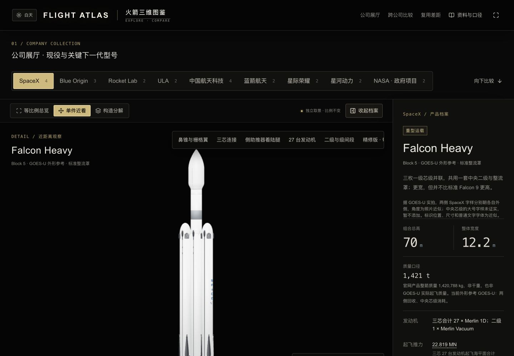
左右字样方位约为各自外侧；精确角度不是官方工程数据。
NASA · 外侧字样实拍NASA · 近正视实拍
New Glenn 7×2
按 NG-1 发射前整箭外观重建。二级环纹、四片控制翼、两条长边条翼、六条收拢支腿和尾舱分块更清楚；七台 BE-4 与两台 BE-3U 独立归属一级、二级。二级发动机在完整装配时藏在级间段内。
第九版更正：去掉无实拍依据的一级纵向长盖板、凹槽和固定件，正反两侧都删除，不再有长线贯穿 NEW GLENN 和 BLUE ORIGIN 字样。尺寸和其他部件保持不变；可编辑源文件与下载模型同步更新。
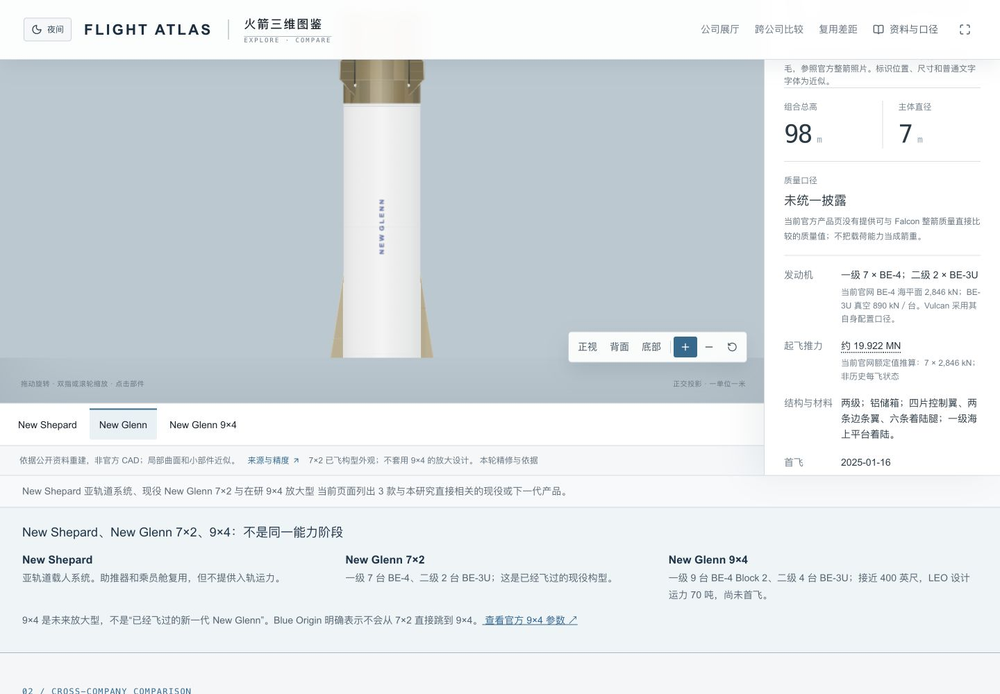
第九版实际网页近景。下方尾部、分解和手机图保留第八版验收记录，不作为本次更正后的截图。
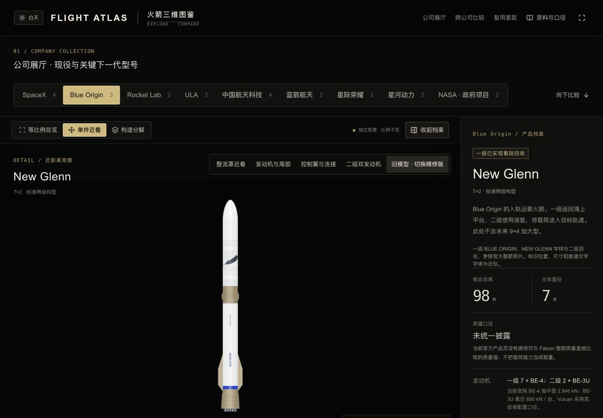
旧版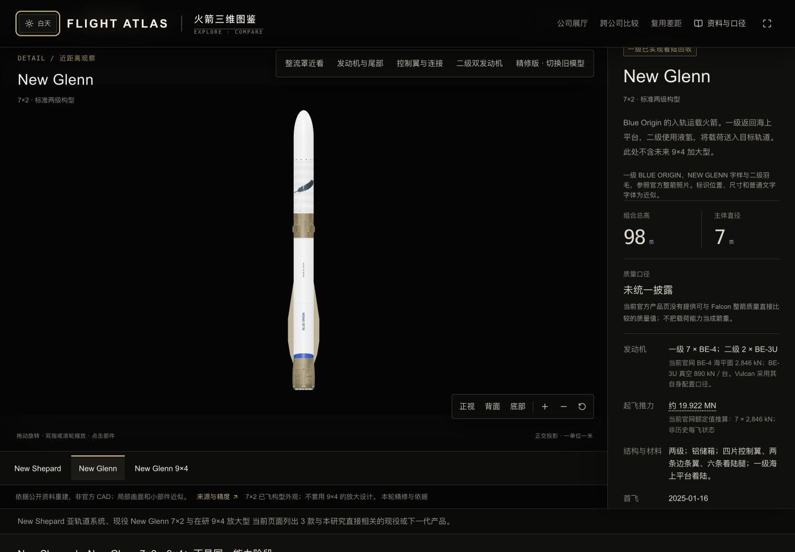
精修版，同一默认视角与主题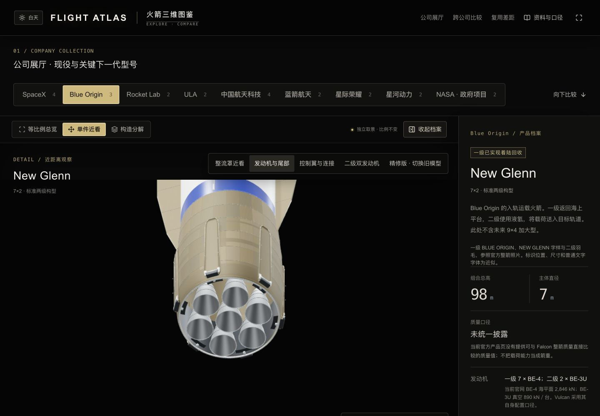
尾部七喷管、腿壳与外侧连接二级双发动机随二级移动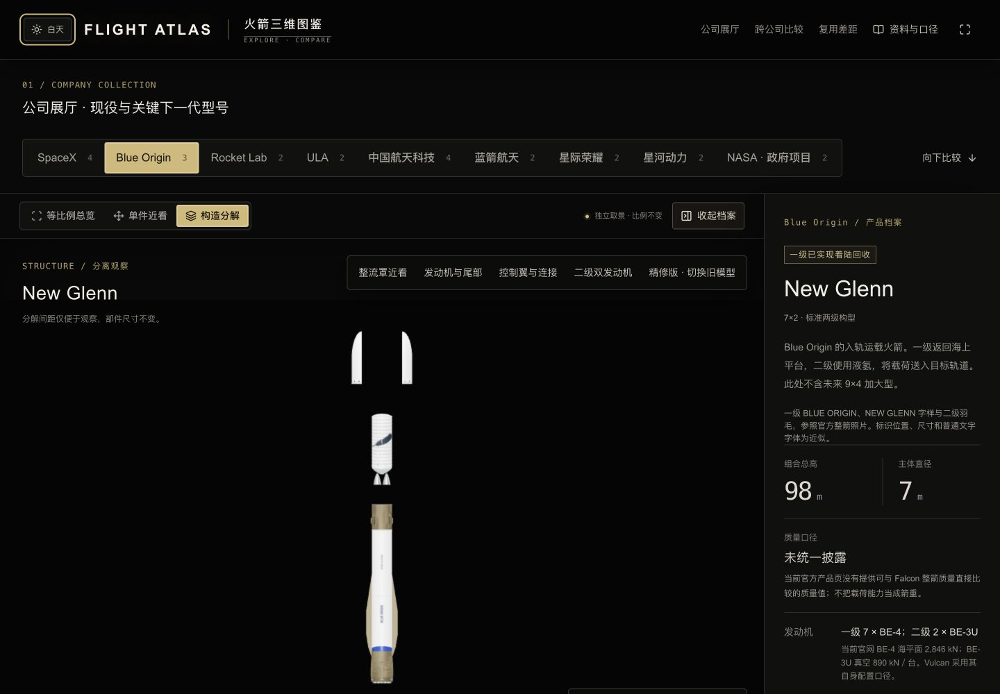
讲解式分解，间距不代表飞行轨迹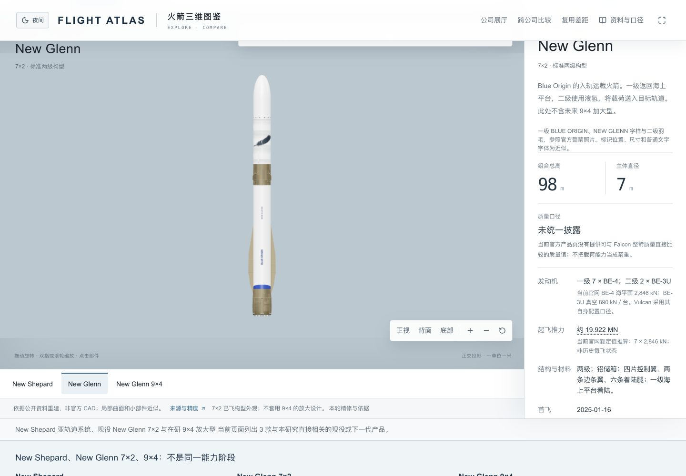
浅色主题检查9×4 仍为设计示意，只纠正了扩径肩部。8.7 米是官方整流罩直径；芯级未明确披露，本页几何约 7.8 米来自官方概念图的比例估计，没有将其当作真实测量值。
New Shepard
载人构型的大窗改为真实开孔、凹入玻璃与分层窗沿，补充舱门、环翼、楔翼、收起减速板、尾翼和四条收拢腿。只有一台 BE-3PM；乘员舱与助推器分开返回。
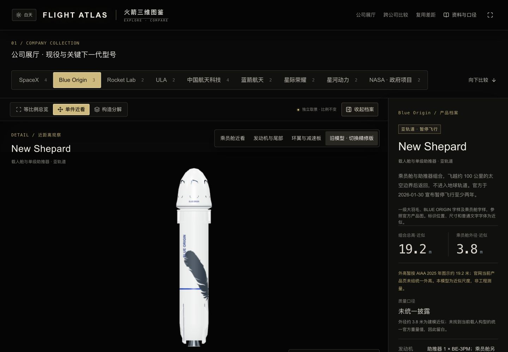
旧版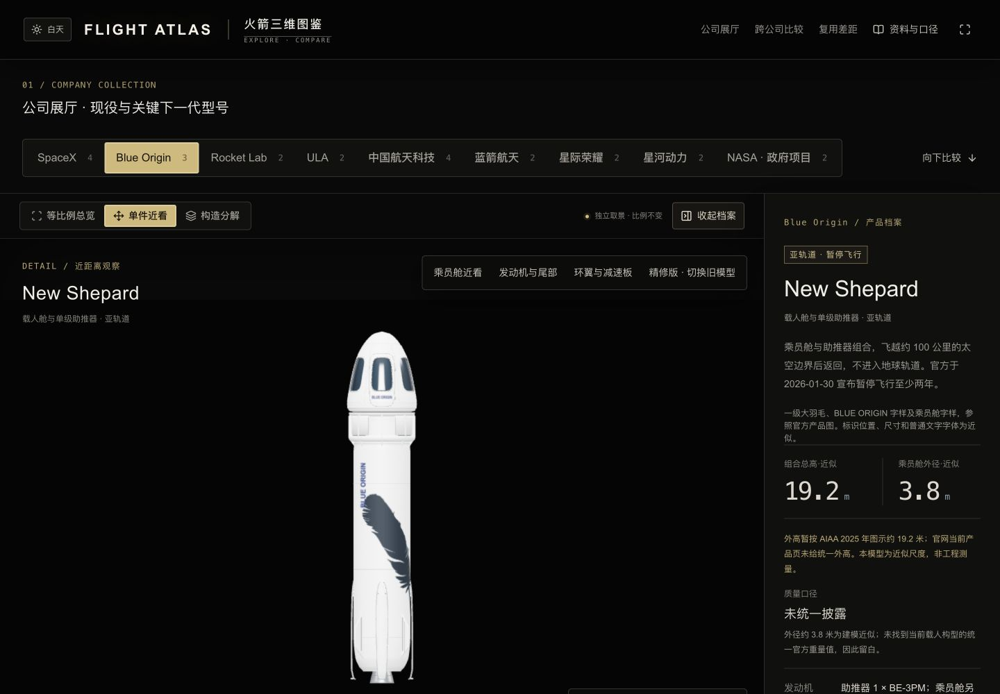
精修版，同一默认视角与主题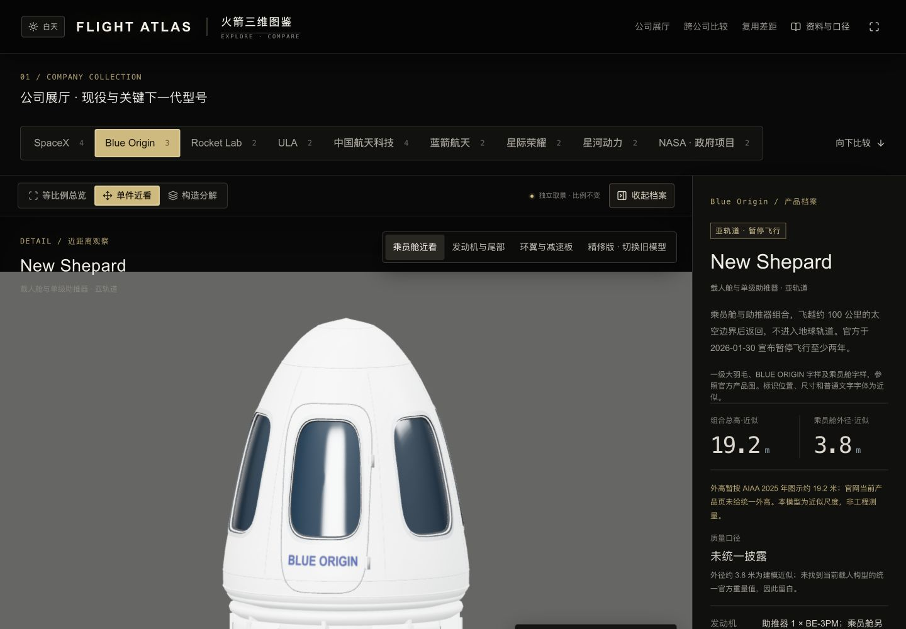
六扇大窗与舱门外观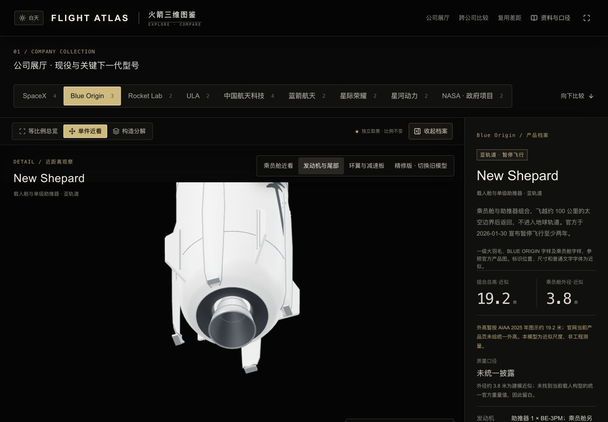
单台发动机、尾翼与收拢腿Crew Dragon · 轻量精修
保留关闭鼻锥与舱段构型，补充圆滑外形、舱门、窗口、接口环、太阳能电池和稳定翼。姿态控制 Draco 小喷口与 SuperDraco 逃逸发动机分开：后者位于更外侧的独立凹舱。未构建座舱内部。
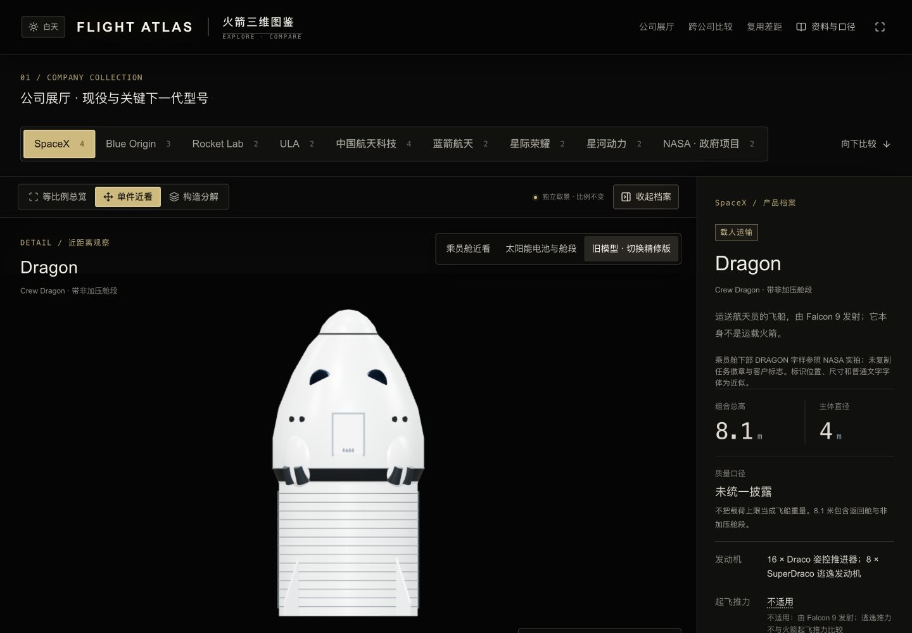
旧版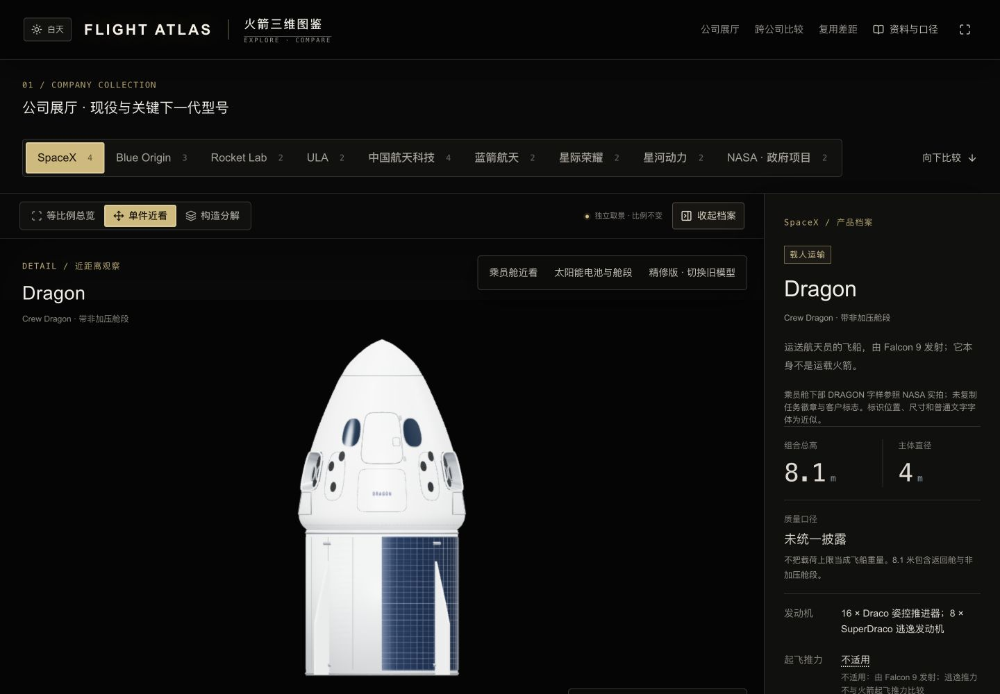
精修版，同一默认视角与主题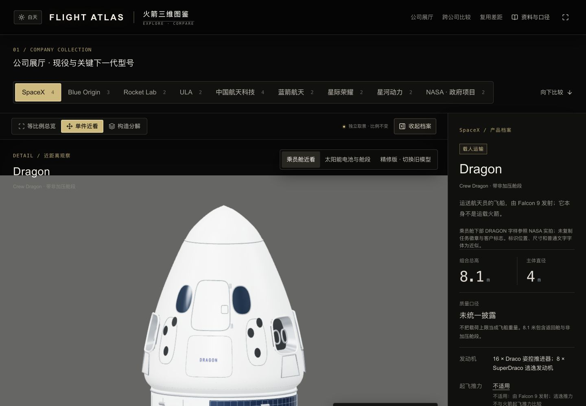
舱门、窗口及两套不同用途的推进器乘员舱与热盾一起离开舱段尺寸、性能与源文件
| 模型 | 总高 | GLB 大小 | 三角面 | 网格 |
|---|
| Dragon | 8.1 m | 3.26 MB | 155,976 | 15 |
| New Glenn | 98 m | 6.98 MB | 333,720 | 41 |
| New Shepard | 约 19.2 m | 4.62 MB | 220,120 | 93 |
三款模型共用米制坐标与地面基线。GLB 没有相机、灯光或自行旋转动画。网页按公司加载精修资产，观察 Blue Origin 时不会同时加载 SpaceX 的精修文件；下方跨公司展厅按所选产品单独加载。
Dragon 可编辑源New Glenn 可编辑源New Shepard 可编辑源Dragon GLBNew Glenn GLBNew Shepard GLB
本机开发网页观察到三款模型加载与解析约 0.13–0.17 秒，Dragon 单件渲染调用 32 次、单帧 CPU 提交约 1 毫秒。这是本机单次观察，不代表手机网络下载或 GPU 帧率。已检查 390×844 手机尺寸视窗的近景按钮与取景，不是实体手机测试。
资料与仍然存在的近似
总高与公开直径用于统一尺度，分段高度、窗框深度、腿壳和铰链截面、喷管曲线、接缝间距仍为外观近似。New Shepard 约 19.2 米和约 3.8 米沿用展厅图示口径，本轮没有获得官方工程尺寸表。Dragon 凹舱及喷口角度仍有简化，不是工程级复刻。材质颜色与粗糙度为显示参数，NG-2 尾部照片仅辅助观察通用外部结构，不复制任务污渍。未把照片当模型贴图。
源包包含可编辑 Blender 文件、重建脚本、来源及统计，不包含第三方摄影原图。